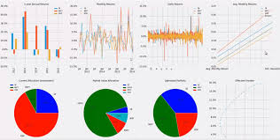

| > |
The SMF (Stock Market Functions) add-in adds a number of functions to EXCEL that can allow data to be extracted and/or retrieved from the web and placed directly into EXCEL cells or ranges.
This website contains the add-in and its supporting files -- documentation, templates, FAQs, etc.
Questions about this website and the SMF add-in should be directed to the discussion group on
Google Groups.
There is also a Blog, for special announcements regarding the add-in.
| Folder Name | Description |
| Documentation of the various functions available In the add-in | |
| Element definition and other supplementary add-in files | |
| Workbook templates and examples of using the various add-in functions (new versions coming) | |
| Tips and FAQs (Frequently Asked Questions) related to the add-in | |
| Top Level Files | Description |
| Latest official relase of the add-in. see Blog for details |
|
| Previous stable relase of the add-in. see Blog for details |
|
| How to install the add-in | |
| A CSV file containing a list of all files on the SMF website |
Please feel free to contribute code changes to the GitHub site for SMF
Or if you wish you can donate using the button below
